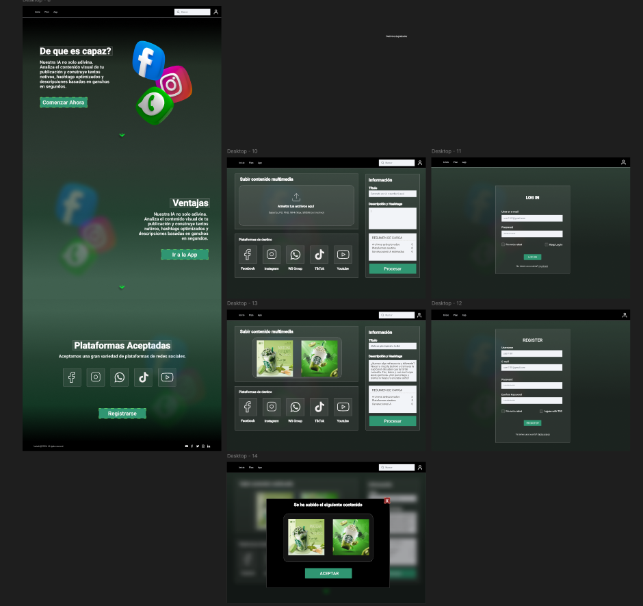
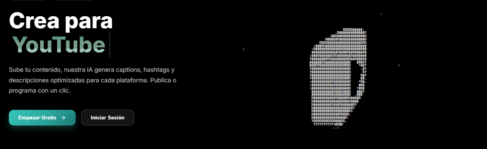

Hi, I'm Deraz. I design and build usable interfaces.
I'm Emmanuel Deraz Labrador, a software engineering student at UABC in Tijuana. I research how people use a product, design it in Figma, and build it with HTML, CSS, JavaScript and React.
I'm in my third year of a B.S. in Software Engineering and Emerging Technologies (expected 12/27, GPA 3.61/4.0). My coursework covers Human-Computer Interaction, UI design, user research and web development, and I like projects where research decisions end up in a working product.
Figma
Wireframing
User interviews
Surveys
Think-aloud testing
Storyboarding
Heuristic evaluation
Benchmarking
HTML/CSS
JavaScript
React
Firebase
Design work
AI Marketing Automation App
Figma · Firebase · Deployed · 2026
Problem. Content managers lose time adapting trends and writing captions for each social platform, and carry a heavy cognitive load doing it.
Process. I interviewed content managers, benchmarked Ocoya, Predis.ai and Opus Clip, then designed 10 Figma screens: landing page, upload and publish flow, login and registration, and confirmation states.
Feedback. Think-aloud tests with 3 participants led to changes such as more contrast between landing-page sections. The app is deployed on Firebase.

Figma screens

Deployed landing page
Catálogo Cimarrón: Usability Study & Redesign
Figma · UABC Library catalog · Team of 2 · Oct 2025
Problem. The university library's catalog is hard to search and look at. In my survey of the existing catalog, 60%+ of respondents rated its visual design unattractive, 53.9% found the search unintuitive and 92.4% said book availability was rarely clear.
Process. We ran a survey and think-aloud usability tests, used storyboards and heuristic evaluation to frame the problems, and co-designed the redesign in Figma.
Goals of the redesign. Modernize the visuals, simplify the search filters and show availability clearly.
Pet-Sitting Platform: Requirements Elicitation
Interviews · Questionnaire · Observation · 2026
I mapped stakeholders (owners, sitters, admins) and wrote role-specific interview guides, a closed-question survey and observation plans focused on trust and safety.
Creative web tools: a pixel-art sprite editor with layers, animation timeline, autosave and real-time collaboration, plus customizable drag-and-drop social profiles. Used by UABC classmates in a video game development course.